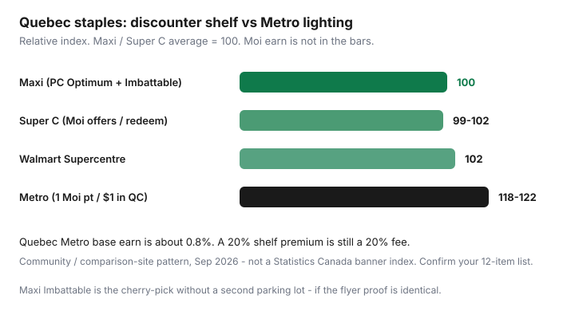

Food & Groceries · Canada
How Quebec shoppers save: Maxi, Super C, and Moi without overpaying at Metro
English grocery advice in Canada is still mostly a GTA triangle: No Frills, FreshCo, Food Basics. Quebec shoppers do not live there. The cheap banners are Maxi (Loblaw / PC Optimum) and Super C (Metro family / Moi). Metro and IGA are full-service. Treating them like a weekly milk run is how you pay a lighting premium and call it loyalty.
This is a Quebec-first rotation: the banner map, Maxi’s Imbattable match, what Moi actually pays at Super C versus Metro Quebec’s 1 point per dollar, when a full-service trip is still rational, Flipp on Thursday, and a Montreal loop that respects the métro. It is not Ontario Food Basics Tuesday advice with the names swapped.
Disclosure: The moi RBC Visa, PC Financial cards, and grocery gift cards are offer types. Saving Optimizer may earn a commission if we later add partner links. We do not currently claim issuer, Metro, or Loblaw partnerships. Confirm earn tables on programmemoi.ca and Maxi’s in-store Imbattable list before you plan a month around them. Pay statements in full.
Key takeaways
- Default staples to Maxi or Super C. Metro’s Quebec Moi earn (~0.8%) does not close a double-digit shelf gap.
- Maxi’s Imbattable program matches a qualifying identical item from an approved competitor flyer (often including Super C, Metro, IGA, Provigo, Walmart — confirm the in-store list). Typical quantity caps apply; bring digital or print proof.
- Super C and Food Basics-style discounters are Moi offers and redemption more than Metro Quebec’s 1 point per $1 base earn.
- Use Metro for a specific SKU, pharmacy, or a week when time is the scarce resource — not for canned tomatoes.
- Flipp + one fulfilment store beats three Saturday parking lots, including downtown.
Quebec banner landscape quick map
| Banner | Parent | Loyalty | Role |
|---|---|---|---|
| Maxi | Loblaw | PC Optimum | Discounter + Imbattable match |
| Super C | Metro | Moi (offers / redeem) | Discounter; flyer proteins |
| Walmart | Walmart | No grocery coalition | Pantry / household; no competitor ad match |
| Metro | Metro | Moi 1 pt / $1 in QC | Full-service; exceptions only |
| IGA / Provigo | Empire / Loblaw | Scene+ / PC Optimum | Neighbourhood full-service |
| Costco | Costco | Membership | Monthly bulk if you finish packs |
PC Optimum at Maxi is still mostly offers on groceries — load them. Moi at Metro Quebec is the rare published grocery base earn (1 point per $1, 500 points = $4 ≈ 0.8¢/point; programmemoi.ca reviewed in our Ontario vs Quebec Moi guide, 16 Sep 2026). Super C is not that earn rate. Do not shop Super C expecting 0.8% on oats.

Maxi price match / discounter role
Maxi markets Imbattable. Point final. Public Maxi copy (reviewed 20 Sep 2026) says: on presentation of proof, they will match prices on identical items (same brand, format, flavour, attributes) from an approved competitor whose list is in store. The competitor ad must be valid and complete. Print or official digital proof at the till. Several conditions apply — read the poster, not a TikTok.
Community and agency how-tos in Quebec commonly name Super C, Metro, IGA, Provigo, and Walmart among competitors Maxi will look at, with a four-unit style cap in some published explainers. That list is store-level. Photograph the board at your Maxi. Walmart Canada still does not match your Maxi flyer; the arrow is one way.
Identical means identical. Super C’s house brand is not Maxi’s No Name. Produce and meat matches are pickier than a box of cereal. Flipp screenshots that cashiers will accept are the same craft as the Flipp price-match system. If the extra four minutes do not beat a Super C trip you were already taking, skip the theatre.
One-store cherry-pick: Maxi as fulfilment + Super C’s loss-leader matched at the till is the Quebec version of Won’t Be Beat. It only works if you stay inside quantity caps and you do not add $20 of unmatched impulse.
Super C + Moi earn advantages
Super C is Metro’s discounter. The Moi accumulation table treats Super C like Food Basics: bonus offers and redemption, not Metro Quebec’s 1-per-dollar. Enrol, scan, load the week’s coupons in the Super C / Moi app. Redeem 500-point chunks when the till total is real groceries, not gift cards.
Jean Coutu still pays 1 point per $1 in Quebec — a pharmacy earn/burn path that does not require a pretty Metro. The moi RBC Visa is a no-annual-fee Visa; issuer pages describe extra earn at participating Quebec grocery banners and Jean Coutu. Read the footnote. It is not a reason to abandon Super C shelves for a Metro that is 18% higher on staples.
New-member Moi bonuses exist on a calendar (Super C’s public page has advertised enrolment bonuses into late 2026). Treat them as a one-time coupon, not a lifestyle.
When Metro full-service is still worth it
Pay the Metro premium when:
- You need a specific SKU Super C does not carry, and a second trip costs more than the gap.
- Pharmacy, prepared counter, or a late-night neighbourhood store is the actual product.
- A loaded Moi offer on a high-low item beats Maxi’s matched price — run the receipt, do not assume.
- Time is scarce this week. Convenience is a fee. Budget it as a fee.
Do not pay it for milk, oats, and canned tomatoes. A 0.8% Moi overlay on a $120 Metro staple cart is about $0.96. A $20 discounter gap is still $20.
Flyer planning with Flipp in Quebec
Thursday cadence is national even when the banners are not. Clip Maxi, Super C, Walmart, and your nearest IGA/Metro. Build five dinners from protein loss leaders, then the list — sales → meals → list. Reebee is fine if it shows your circulars more cleanly. One flyer app, not five.
PC Optimum offers at Maxi and Moi offers at Super C get three minutes on Sunday, same as the weekly grocery system. Surplus: Flashfood launched at Maxi and remains in many Loblaw Quebec stores; Too Good To Go is a downtown bakery hobby, not a staple system.
Montreal multi-store transit-friendly loops
Car-free Montreal is not a GTA parking-lot rotation. Design loops around a commute, not a Saturday of three STM tickets:
- One Maxi or Super C weekly on a line you already ride, with a folding crate. Price-match at Maxi instead of adding a second store “just to see.”
- Jean Coutu on the same walk when you need pharmacy Moi earn — not a dedicated trip for 80 cents.
- Ethnic grocers (Jean-Talon, Chinatown, Côte-des-Neiges, etc.) for produce, tofu, spices, and pulses. They are often the real discounter on those SKUs.
- Costco only if you have a household card, a way to haul, and freezer space — see the couples framework.
If a second store is 25 minutes out of direction for a $6 gap, stay. If it is 400 metres and a documented $18 protein, go. Count the ticket and the impulse zone.
Quebec is not Ontario with French labels. Use Maxi and Super C as the base, Moi and PC as overlays, Metro as an exception, and Flipp as the operating system. Then stop re-litigating it every Saturday.
Sources & date stamps
- Maxi, Imbattable / unbeatable public pages: identical-item match, approved competitors listed in store, print or digital proof (reviewed 20 Sep 2026).
- programmemoi.ca accumulation table as summarized in our Moi Ontario vs Quebec guide (reviewed 16 Sep 2026): Metro QC 1 pt/$1; Super C offers/redeem.
- Super C Moi program page (enrolment bonus language into Oct 2026; scan and app coupons).
- Ratehub / Canadian loyalty explainers; Flipp Canada how-tos; community Maxi vs Super C basket posts (directional, labelled).
Frequently asked questions
Which is cheaper in Quebec, Maxi or Super C?
There is no permanent winner. Both are discounters. Maxi adds PC Optimum and Imbattable matches; Super C adds Moi offers and redemption. Compare this week’s flyers on your 12-item list, then pick one fulfilment store unless the gap beats the trip.
Does Maxi price match Super C?
Maxi’s Imbattable policy matches identical items from approved competitors listed in that store. Super C is commonly included in Quebec how-tos, but the legal list is on the wall. Bring a complete, in-date flyer proof. Quantity caps and identical-item rules apply.
Do I earn 1 Moi point per dollar at Super C?
Treat Super C as offers and redemption, not Metro Quebec’s 1 point per $1 grocery base earn. Scan anyway, load coupons, redeem at Super C when you have 500-point chunks. Jean Coutu remains 1 point per $1 for pharmacy.
Is Metro ever worth it if I have a Super C?
Yes for a specific item, pharmacy, or a week when time is scarce. No as a weekly staple store. Quebec’s ~0.8% Moi earn does not cancel a 15–20% shelf premium on oats and milk.
What about Ottawa–Gatineau?
The till follows the banner’s province, not your postal code. A Quebec Super C or Maxi is a Quebec shop. An Ontario Food Basics is an Ontario shop. Read the receipt and the loyalty app.